Full speaker notes from the PowerPoint, in slide order. 90 minutes, from slide 3 to slide 38. Slide 33 is hidden in the PowerPoint and replaces slide 32 when breakout rooms aren’t used.
Before class
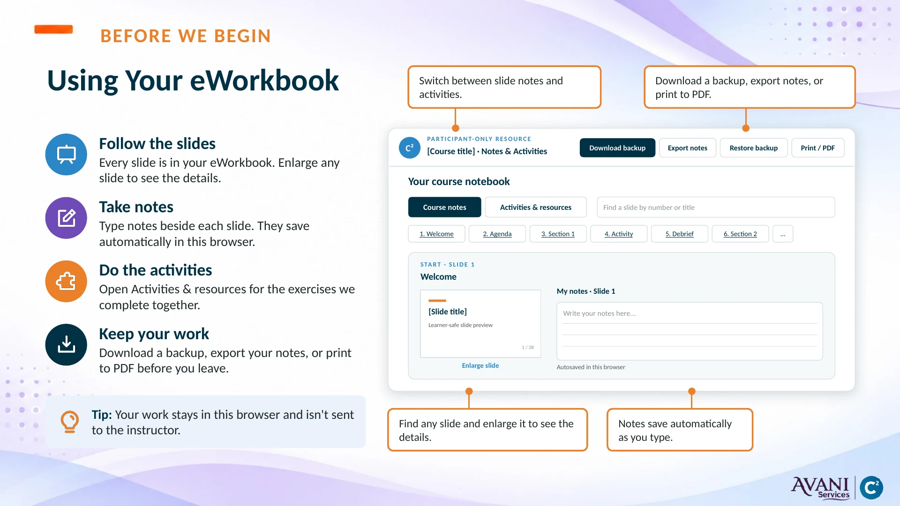
Pre-session, as participants join. Not counted in the 90 minutes.
Participant eWorkbook link and downloadable PDF backup, both included in the welcome message below.
Help participants access and navigate the eWorkbook. Participants will use it to follow along with slides, take personal notes, complete activities, and retain course resources.
DODisplay this slide 10 to 15 minutes before the published start.
PASTE IN CHATShare the following welcome message as participants join.
DOGreet early arrivals and ask them to test chat by sharing where they're joining from.
SAY"Your eWorkbook has all of your course materials in one place. You'll find a thumbnail of each slide with space to take your own notes. Select a thumbnail to see a larger version. The Activities & Resources section contains your exercises, worksheets, and job aids."
DOWalk participants through the eWorkbook preview on the slide. Point out the following features in sequence:
Course Notes: Navigate by slide or module, enlarge slide thumbnails, and type notes beside each slide.
Activities & Resources: Open the exercises and supporting materials used throughout the course.
Automatic Saving: Notes and responses save locally in the browser as participants work.
Download Your Work: Export notes or save a workbook backup at the end of the session for future reference.
SAY"The slide previews show the information you need to follow along, but they won't give away answers we'll discuss or reveal during class. You can add to your notes as we go and revisit them afterward."
DOAsk participants to open Course Notes, select the first slide, and locate its notes field. Have them enter a short test note to confirm typing works. Remind them that their notes are private and aren't submitted to the instructor.
DOIf participants can't access the HTML eWorkbook, direct them to the PDF backup. Explain that the PDF provides a reference and note-taking alternative, but may not include the HTML version's interactive features or automatic saving. Participants can also use their preferred notes application.
Participants who arrive late may miss the welcome links. Repost the message at the beginning of the session.
Participants may assume automatic saving means their work is stored online. Clarify that work saves in their current browser and should be downloaded before leaving.
Participants may confuse Course Notes with Activities & Resources. Explain that Course Notes is for personal note-taking, while Activities & Resources contains the exercises they'll complete.
Participants using the PDF backup may need to save their work manually.
"Now that you have your eWorkbook ready, let's get started."
About one minute before the published start, advance to the title slide.
Before class
Pre-session, as participants join. Not counted in the 90 minutes.
Virtual platform open with screen sharing and chat ready 15 minutes before start. Welcome message ready to repost. A visible countdown timer: the platform timer, or a timer in a second window you can share.
Signal that the session is about to begin and catch late arrivals up on the eWorkbook links.
DOAbout one minute before the published start, advance to this slide.
PASTE IN CHATRepost the welcome message for late arrivals.
DOAt the published start time, advance to Meet your instructor. The 90 minutes begin there.
At the published start time, advance to Meet your instructor. The introduction, agenda, and participation norms are covered within the 90-minute session.
Opening and relevance
1 minute
Customize before class: your name, title, one-sentence bio, and a photo in the circle (select the circle, then Shape Format > Shape Fill > Picture). For two instructors, duplicate the circle and text group and place it to the right.
Establish credibility quickly and keep the opening on schedule.
DOStart the session on time, even if a few people are still joining.
SAY“Welcome. I’m [name], and I [one line about your role]. Over the next 90 minutes we’ll practice something practical: adjusting how we communicate, without changing what’s true. You’ll do most of the work in chat and in your eWorkbook.” Add one brief moment from your own mentoring or work when adapting how you communicated made a difference.
DOKeep it brief. The opening segment has 8 minutes in total.
“Let’s look at where we’re headed today.”
Opening and relevance
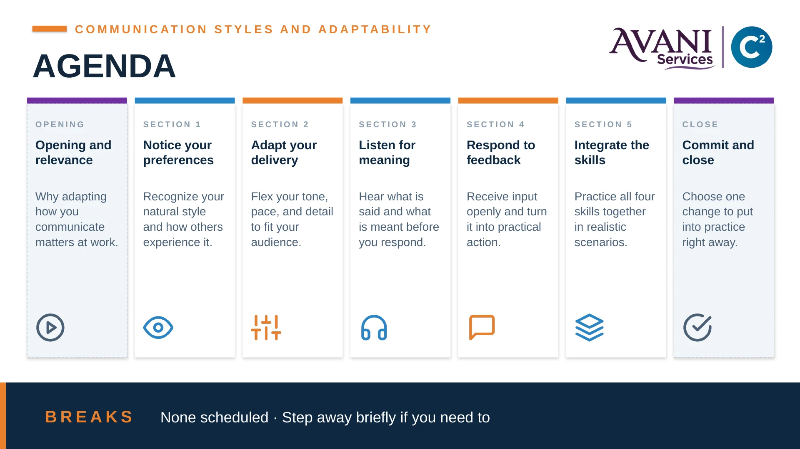
3 minutes
Teams or Zoom with working chat and screen sharing. eWorkbook and PDF links already posted.
State why the course matters to participants, preview the course outcomes and the path through the session, and set participation norms. This agenda is part of instruction, not a pre-session holding slide.
WHY IT MATTERS (SAY)“When you understand the people you’re communicating with, you can tailor your communication so they’re better able to receive it. That instantly makes you a better communicator. Every day, you share updates, ask for things, and get feedback. When a message misses, it’s rarely because the facts were wrong. It’s usually because the message wasn’t shaped for the person receiving it. Today you’ll practice noticing what people need and adjusting how you say things, without changing what’s true. That makes your messages easier to act on, and your conversations faster and less frustrating.”
SAY“By the end of today, you’ll be able to name your own communication preferences and one blind spot; recognize cues in others without labeling anyone; adjust the structure, pace, and detail of a message for your listener; and listen, clarify, and respond to feedback in a realistic conversation.”
SAY“Here’s our path. We’ll notice our own preferences, adapt a message, listen for meaning, and respond to feedback. Then we’ll put it all together in one realistic conversation, including a short practice in small groups. We’ll finish with one commitment you can use this week.”
DOPoint to each agenda column as you name it. Don’t read the descriptions. Mention that the opening takes 8 minutes and the integrated practice takes 23 minutes.
SAY“A few norms. Camera is optional. Take part in chat or out loud, whichever works for you. When you share a work example, leave out names and identifying details. There’s no scheduled break, so step away briefly if you need to.”
Some participants expect a personality assessment. Say: “This isn’t an assessment, and nobody gets a label. We’ll focus on what people say and ask for, which you can observe and check.”
“Let’s start with a moment most of us have lived through.”
Opening and relevance
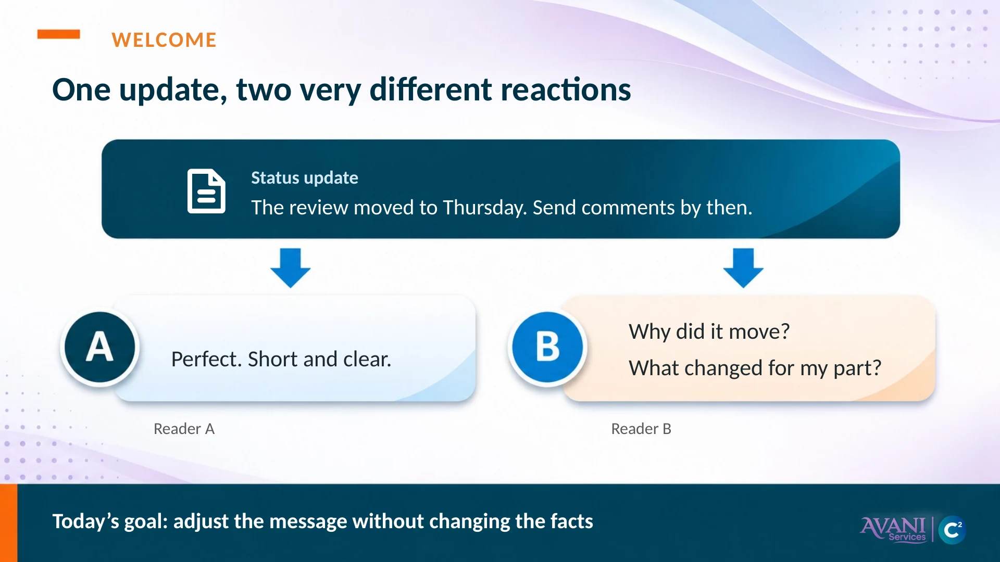
1 minute
PowerPoint in presentation mode.
Make the topic relevant with a familiar moment and state the session goal.
WHY IT MATTERS (SAY)“Most friction in routine work conversations isn’t caused by wrong information. It comes from delivery that fits one person and frustrates another. That’s good news, because delivery is something you can change.”
SAY“Here’s a familiar moment. You send a quick update: the review moved to Thursday, send comments by then. Reader A is happy: short and clear. Reader B is frustrated: why did it move, and what changed for my part? Same facts. Different needs.”
DOPoint to the goal at the bottom of the slide.
SAY“Today’s goal isn’t to change the facts. It’s to adjust the message so it works for the person receiving it.”
Some participants hear “adapt” as “tell people what they want to hear.” Clarify now: the facts, the request, and the deadline stay the same. What changes is order, pace, and level of detail.
“That’s one version of the challenge. Now I’d like to hear yours, and what you’re hoping to get out of today.”
Opening and relevance
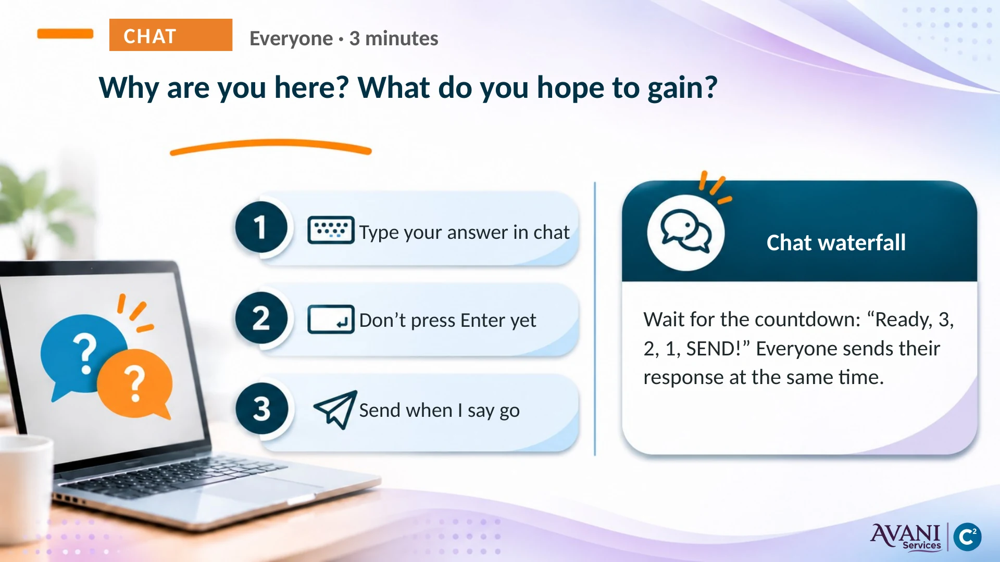
3 minutes: about 1 minute to explain and type, then 2 minutes to read responses and name themes
Chat. Optional: a 1-minute timer.
Learn why participants enrolled and what they hope to gain, so you can connect the session to their goals. Gets every participant responding in the first minutes.
WHY IT MATTERS (SAY)“We all have communication challenges. Even the simplest communication can go awry. Let’s draw on your experiences, and on what you’re hoping to get out of today.”
SAY“In a line or two: why did you sign up, and what’s one work conversation you’d like to handle better? We’ll answer as a chat waterfall, so everyone’s answer lands at the same time.”
PASTE IN CHATPaste the question so everyone has it in writing.
SAY“Type your answer now, but hold it.”
DOAllow about 45 seconds. Then count down: “Ready? 3, 2, 1, send!”
DOScroll the chat and read three or four responses aloud, choosing different goals. Use first names only if participants are already shown by name. Group the answers into themes as you read.
DEBRIEFName the themes you heard and connect each one to today. For example: “I’m hearing detail, context, unclear requests, and feedback that’s hard to hear.” Detail and context are about preferences and delivery; unclear requests and assumptions are about listening; the tension after an update is about feedback. “We’ll work on each of those.” Note one or two specific goals and mention them again when you reach that section. Connect one or two themes to the outcomes you previewed on the agenda. For example: “Several of you mentioned feedback. That’s outcome four.”
Too much detail, or too little context
Rushed updates or unclear requests
Assumptions about what the other person knows or wants
Different priorities or different preferred pace
Meetings or emails that never reach a decision
Communicating with a new supervisor, mentor, or mentee
Updates or emails that get misread or ignored
Working with someone who wants much more, or much less, detail
Receiving or giving feedback without it turning tense
“My program requires it.” Acknowledge it, then ask what would make the 90 minutes useful.
If a response names a specific person or office, thank the participant and restate the privacy norm for the whole group without singling anyone out.
Participants without chat can unmute after the countdown or send you a private chat. Read audio and private answers aloud without names as part of the themes.
“We’ll start with what each of us tends to do naturally.”
Section 1 · Notice your preferences
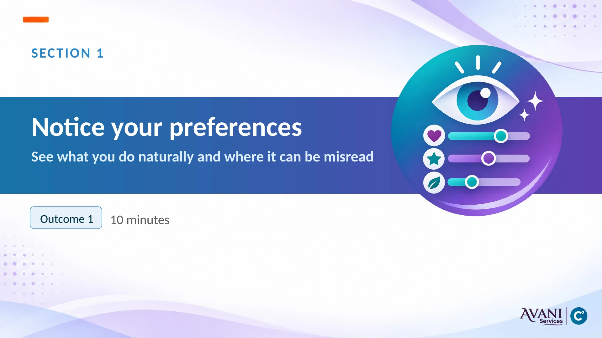
1 minute
PowerPoint in presentation mode.
Open Section 1 and connect it to Outcome 1.
SAY“Section 1 is about you. Before you can adapt to someone else, it helps to know your own defaults, and where they might be misread.”
“Here are four dials you can adjust in almost any message.”
Section 1 · Notice your preferences
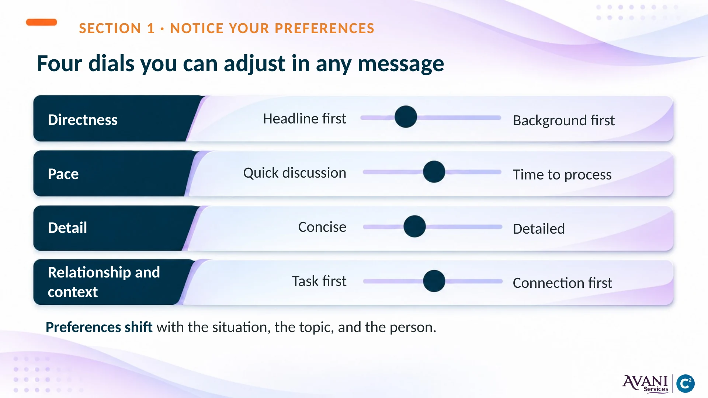
1 minute
PowerPoint in presentation mode.
Introduce the four adjustable message dimensions used throughout the course.
WHY IT MATTERS (SAY)“Most of us have a default way of communicating, and we may not realize that we can adjust how we communicate and how much detail we give. Here are four main ways to adjust your communication and get different results.”
SAY“Think of four dials. Directness: do you lead with the headline, or build up to it with background? Pace: do you like to talk it through quickly, or do you need time to process before you respond? Detail: concise or detailed? And relationship and context: do you get straight to the task, or connect with the person first?”
DOPoint to each row as you name it.
SAY“Neither end is better. A leader deciding in a five-minute window probably needs the headline. A colleague facing a complicated policy change may need the background first. And as the slide says, your setting shifts with the situation, the topic, and the person.”
Participants may treat a dial as fixed, for example, “I’m just a detail person.” Reinforce that everyone has a default, and anyone can turn a dial on purpose.
“Now map your own defaults.”
Section 1 · Notice your preferences · eWorkbook, Part 1
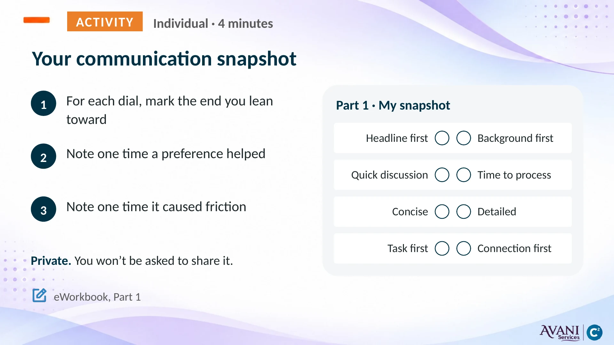
4 minutes: about 1 minute to mark the four pairs and 3 minutes to note two situations
eWorkbook, Part 1 (My snapshot). Visible 4-minute timer. Chat, for the instructions below.
Each participant identifies personal communication preferences and one potential blind spot (Outcome 1).
Four marked preferences and two short situations. The friction example names a potential blind spot.
WHY IT MATTERS (SAY)“Let’s start by applying those dials to ourselves. Knowing your own preferences is a good starting point for recognizing other people’s.”
SAY“This is a quick, private self-check. There are no right answers and no scores, and you won’t be asked to share it.”
DOAsk everyone to open Part 1 of the eWorkbook.
PASTE IN CHATPaste the instructions.
SAY“Take about a minute to mark the four pairs. Use the rest of the time for two quick situations: one where a preference helped, and one where it caused friction. That friction example points to a possible blind spot.”
DOStart the 4-minute timer.
DOWith about 3 minutes left, say: “If you haven’t already, move on to your two situations.” With 1 minute left, say: “One minute. Finish your thought.”
DEBRIEFHandled on the next slide through a voluntary chat share.
“I lean headline first and concise. It helped when leadership needed a quick decision. It caused friction when a new team member needed the background to do the work.”
“I need time to process. It helped on a complex policy review. It caused friction in a meeting when I stayed quiet and others assumed I agreed.”
“I’m connection first. It helped when onboarding a mentee. It caused friction with a colleague who wanted to get straight to the agenda.”
Participants who answer “it depends” for every pair: ask them to choose their default when they’re under time pressure.
Participants who start describing a colleague: redirect them to their own preferences.
“Hold onto your friction example. You’ll use it right now.”
Section 1 · Notice your preferences
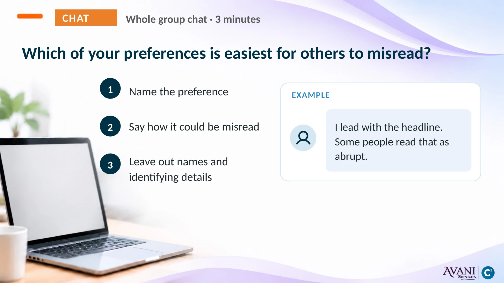
3 minutes: 1 minute to write and post, then 2 minutes to read and discuss
Teams or Zoom chat. eWorkbook, Part 1 notes.
Surface how preferences get misread, using participants’ own examples.
WHY IT MATTERS (SAY)“Sometimes our preferences get misread. Someone who’s very concise and direct may come across as harsh. Most friction comes from a mismatch, not from bad intent.”
SAY“Look at your friction example. Which of your preferences is easiest for others to misread? Name the preference and how it could be misread, in a sentence or two.”
PASTE IN CHATPaste the prompt with the example.
DOAllow about a minute to write and post.
DORead three or four responses aloud. Choose contrasting ones: one concise and one detailed, one fast and one reflective.
ASK“What would someone with the opposite preference need from you in that moment?” Take one or two answers.
DEBRIEFPoint out that the strongest posts name an adjustment, such as “I can lead with the headline when time is short,” rather than a judgment about the other person. Most friction comes from a mismatch, not from bad intent.
Concise updates can sound abrupt or dismissive.
Giving background first can feel like delaying the point.
Answering quickly can leave other people’s questions unanswered.
Needing time to process can look like disengagement, or like agreement.
Starting with connection can look like wasting time to a task-first colleague.
Responses that judge the other person, such as “they just can’t handle directness.” Reframe: “So the mismatch is directness. What could you adjust?”
Participants can unmute to share, or send a private chat for you to read without a name.
Invite one or two participants to expand on their posts aloud if useful; keep the main activity in chat.
“So what does that mean for your own default?”
Section 1 · Notice your preferences
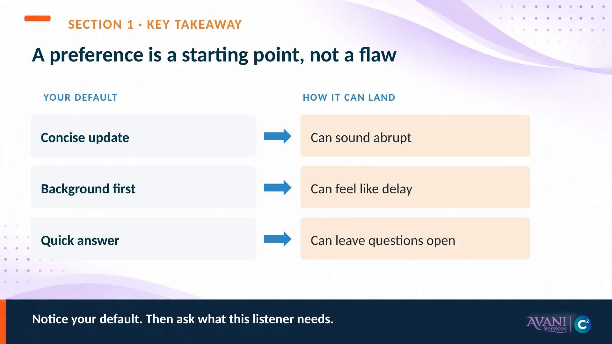
1 minute
PowerPoint in presentation mode.
Close Section 1 with the key takeaway.
SAY“Every preference on this slide is useful in the right moment. A concise update is a gift when time is short. Background is a gift when the change is complex. The only risk is that your default may not fit every listener. So notice your default, then ask what this listener needs.”
DOPoint to the takeaway at the bottom of the slide.
“That brings us to Section 2: adapting your delivery.”
Section 2 · Adapt your delivery
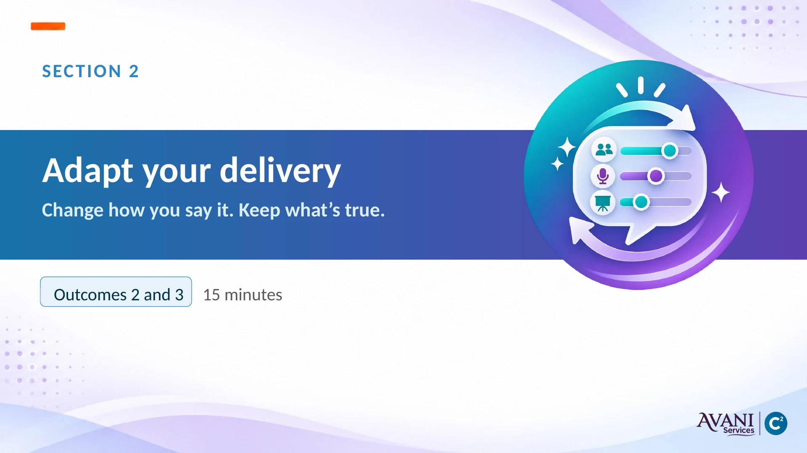
1 minute
PowerPoint in presentation mode.
Open Section 2 and connect it to Outcomes 2 and 3.
SAY“In this section, you’ll learn to recognize what someone needs from what they say and ask. You’ll see one message delivered two ways, and then rewrite a message for two different listeners. The rule for the whole section is on the screen: change how you say it, keep what’s true.”
“First, how do you know what someone needs?”
Section 2 · Adapt your delivery
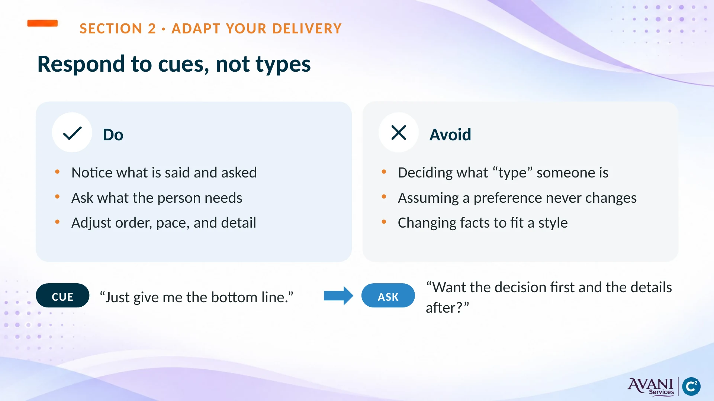
2 minutes
PowerPoint in presentation mode.
Teach participants to recognize observable cues on the four dials and to ask rather than label (Outcome 2).
WHY IT MATTERS (SAY)“It’s important to use what you notice as a lens, not a label. A lens helps you notice. A label decides for you.”
SAY“Use what you can observe: what the person says, what they ask for, and how they respond. Cues might sound like lots of why questions, a request for the timeline, a preference to talk live instead of email, or a request for documentation. You can read those cues on the same four dials. ‘Just give me the bottom line’ is a directness cue. ‘Let me think about it and get back to you’ is a pace cue. Lots of why and how questions, or a request for the document, is a detail cue. Starting with how the team is doing, or asking who this affects, is a relationship and context cue.”
SAY“Cues can change. The same person may want the bottom line in a budget meeting and the full background on a policy change. So respond to what you see today, not to who you’ve decided they are.”
DOPoint to the Do card, then the Avoid card. Name each item once.
DOPoint to the cue-and-ask strip at the bottom.
SAY“If you’re not sure what someone needs, ask. ‘Want the decision first and the details after?’ You’ve adapted, and you haven’t labeled anyone.”
Labeling comments, even as a joke, such as “she’s such a detail person.” Redirect lightly: “What did she actually ask for?”
Participants who ask which “type” a colleague or manager is. Say: “We’re not assessing anyone today. Instead of deciding what someone is, notice what they seem to need, and ask.”
Participants who mention a personality assessment they’ve taken. That’s fine for private reflection. Keep the focus on observable cues, and don’t ask anyone to share a profile.
“Let me show you what adapting looks like with one real message.”
Section 2 · Adapt your delivery · 1 click reveal: “Kept in both” line
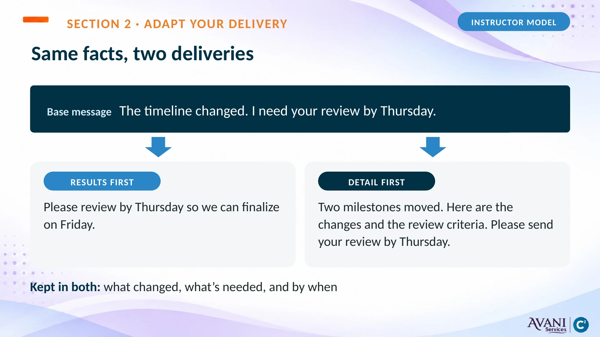
2 minutes
PowerPoint in presentation mode. This slide has one click build: the “Kept in both” line.
Model how the same facts can be delivered results first or detail first.
WHY IT MATTERS (SAY)“Now let’s see how you can adapt a message for different audience needs without changing the basic facts.”
SAY“Here’s the base message: The timeline changed. I need your review by Thursday.”
SAY“For a colleague who wants results first, I lead with the request and the reason: Please review by Thursday so we can finalize on Friday.”
SAY“For a colleague who wants detail first, I start with what changed and the criteria, then make the request: Two milestones moved. Here are the changes and the review criteria. Please send your review by Thursday.” Read each version in a natural voice, as if speaking to that colleague.
ASK“What changed between the two versions?” Take one or two answers aloud or in chat.
ASK“What stayed the same?”
DOClick to reveal the “Kept in both” line and confirm: what changed, what’s needed, and by when.
Changed: the order (request first or context first), the amount of detail (one sentence or three), and the reason given (finalize on Friday, or milestones and criteria)
Stayed the same: the change, the review request, and the Thursday deadline
Participants may think the detail-first version is better because it’s longer. Neither is better. Each fits a different listener.
“Now it’s your turn with a different message.”
Section 2 · Adapt your delivery · eWorkbook, Part 2
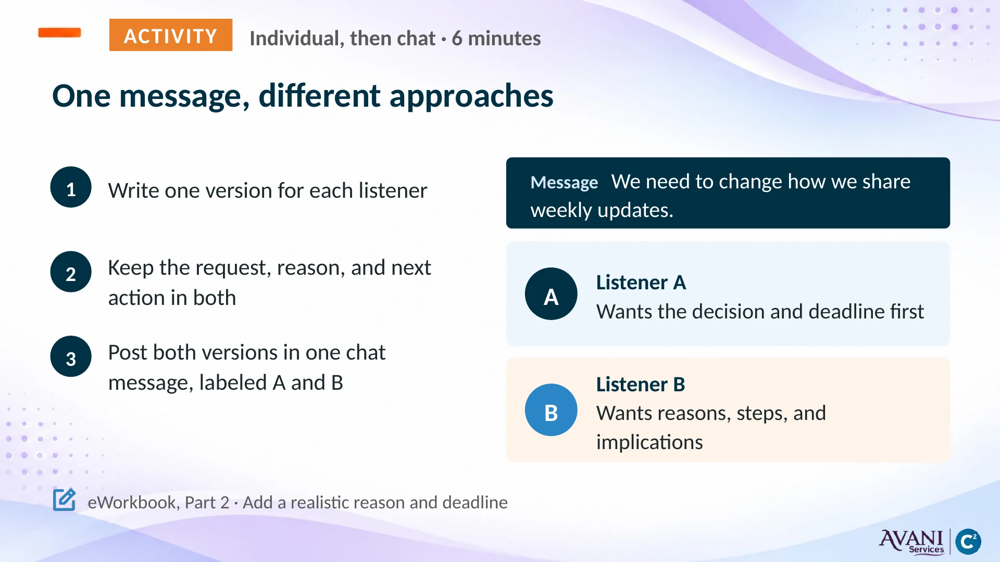
6 minutes: 1 minute for directions, 4 minutes to write both versions, and 1 minute to post
eWorkbook, Part 2 (One message, two versions). Visible 4-minute timer. Chat.
Participants adjust structure, pace, and detail for two listeners’ stated needs while keeping the facts the same (Outcome 3).
Two versions of the same message, each fitted to one listener, with no change in the facts.
SAY“Now you’ll do the same thing with a new message: We need to change how we share weekly updates. You have two listeners. Listener A has told you they want the decision and the deadline first. Listener B has told you they want the reasons, the steps, and what it means for them.”
DOAsk participants to open Part 2 of the eWorkbook.
PASTE IN CHATPaste the instructions.
SAY“The base message is vague on purpose, so add a realistic reason and deadline. For example: starting next Monday, because decisions are getting lost in long emails. Use those same facts in both versions. Only the order, pace, and amount of detail should change. When time’s up, you’ll post both versions in one message, labeled A and B, so we can compare them side by side.”
DOStart the 4-minute timer.
DOAt about the halfway point, say: “If you haven’t started Listener B, start it now.” With 1 minute left, say: “One minute. Check that both versions use the same facts.”
SAY“Time. Post both versions now, in one message, labeled A and B.”
Listener A: “Starting Monday, weekly updates will be a one-page summary with decisions at the top. Please send your items by Friday at noon.”
Listener B: “We’re changing how we share weekly updates because key decisions are getting lost in long emails. Starting Monday, we’ll use a one-page summary: decisions first, then open items, then details. That means sending your items by Friday at noon instead of Monday morning. Let me know what that changes for your team.”
Why these work: both keep the same change, reason, deadline, and next action. Only the order and amount of context change.
Different facts in the two versions, such as different deadlines
A Listener B version so long that the request disappears
Labels in the message itself, such as “since you’re a detail person”
Participants who can’t use chat can keep both versions in the eWorkbook and read them aloud during the debrief, or send them to you by private chat.
“Let’s look at what you wrote.”
Section 2 · Adapt your delivery
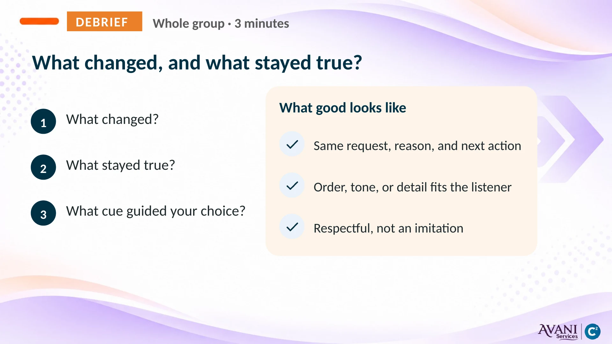
3 minutes
Chat posts from the previous activity.
Debrief the two versions against the success criteria.
DOChoose a chat post where the two versions differ clearly. Read A and B aloud, or invite the author to read them.
ASKThe three questions on screen, in order: “What changed? What stayed true? What cue guided the choice?”
DOCheck the example aloud against What good looks like: same request, reason, and next action; order, tone, or detail fits the listener; respectful, not an imitation.
DOIf time allows, repeat with a second post. If no one posted, use the sample versions from the previous slide’s notes.
DEBRIEF“Clarity, accuracy, and respect matter more than imitation. You don’t need to mirror someone’s energy or speech. You need to give them the message in the shape that helps them act.”
Changed: the order, the length, the amount of context, the tone
Stayed true: the change itself, the reason, the deadline, and what the listener needs to do
Cue: the listener’s stated need. Listener A asked for the decision and deadline first. Listener B asked for reasons, steps, and implications.
Imitation. Copying someone’s style or energy can feel insincere. Adapting is about structure and detail, not performing a style.
“Let’s end this section with a model that can help you remember to change the delivery to match your listener’s needs and preferences, while keeping the facts.”
Section 2 · Adapt your delivery
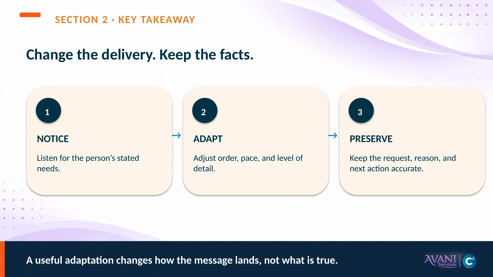
1 minute
PowerPoint in presentation mode.
Consolidate Section 2. Reinforce the distinction between adapting a message and changing its facts, and bridge from observing communication cues to listening for meaning.
SAY“This framework summarizes the skills you’ve been practicing and can help you remember them.”
DOPoint to the three cards in order: Notice, Adapt, Preserve. Spend about 15 seconds on each. Don’t start a new discussion here.
SAY“First, notice what the person has actually told you they need. Next, adjust the order, pace, and amount of detail. Finally, preserve the facts: the request, the reason, and the next action. Adapting isn’t imitation, and it isn’t telling people different things. It’s making one accurate message easier to understand and use.”
ASK“What must stay true when we adapt a message?” If a quick response fits the time, accept: the facts, request, reason, deadline, and next action.
Participants identify that structure, tone, pace, and detail may change while factual commitments stay the same.
Participants treating a preference as a permanent trait. Reinforce that observable cues and direct questions are more reliable than guessing what someone is like.
“Once we’ve adjusted how we deliver a message, we also need to check what we hear. That’s our next section: Listen, Clarify, Confirm.”
Section 3 · Listen for meaning
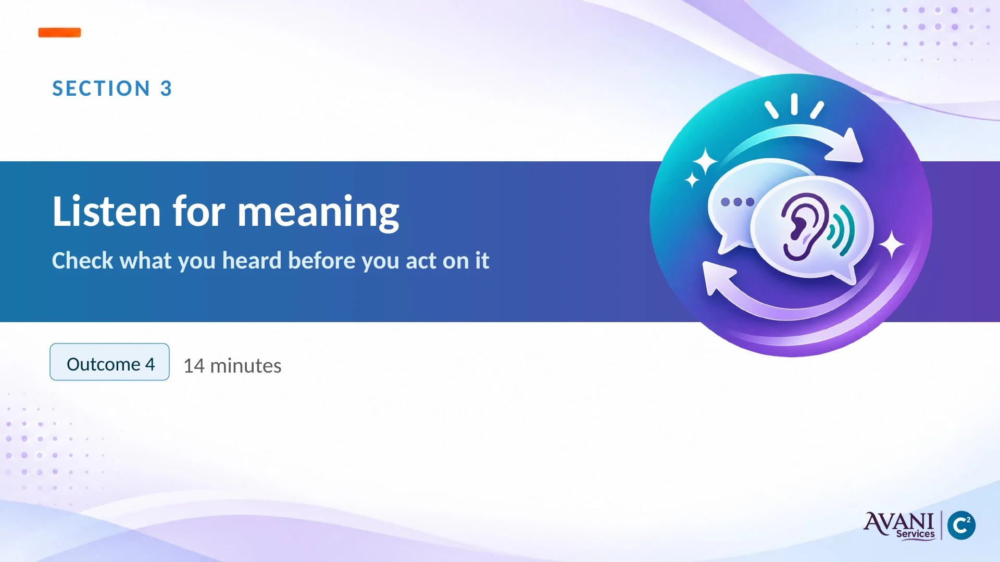
1 minute
PowerPoint in presentation mode.
Open Section 3 and connect it to Outcome 4.
SAY“Section 3 is about the other direction: making sure what you heard is what the other person meant, before you act on it.”
“Here’s a three-step model to do that.”
Section 3 · Listen for meaning
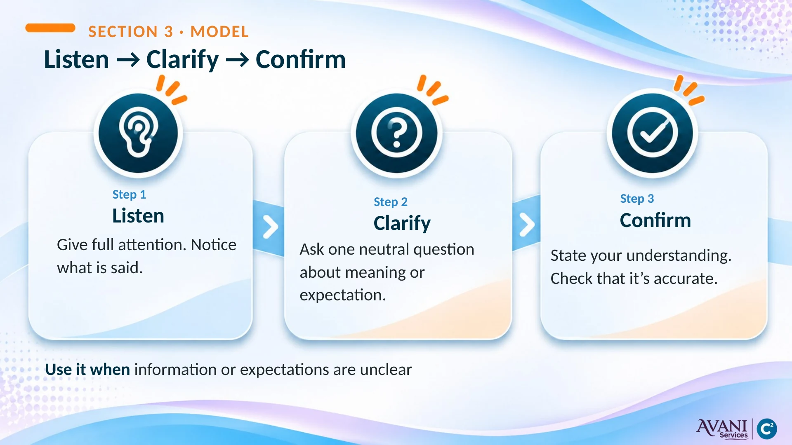
2 minutes
PowerPoint in presentation mode.
Teach Listen → Clarify → Confirm in plain language.
WHY IT MATTERS (SAY)“Many misunderstandings at work start with a reasonable assumption that nobody checked. This three-step model gives you a fast, neutral way to close the gap before you act on the wrong version of a request.”
DOPoint to each card as you describe it.
SAY“Listen means full attention. Stop typing, and notice what’s said and what’s emphasized. Clarify means asking one neutral question about meaning or expectation. Neutral means it doesn’t defend and doesn’t blame. It just asks. Confirm means stating your understanding back in specific terms and checking that it’s accurate. Confirm is what turns a conversation into an agreement. Use this model whenever information or expectations are unclear.”
SAY“This is the first of two models today. In Section 4, you’ll learn a separate structure for responding to feedback. They work together, but they solve different problems.”
Participants may treat “Okay, got it” as a confirmation. It isn’t specific. A real confirmation includes something checkable: a date, an owner, a format, or an amount.
“Here’s how it sounds in a real exchange.”
Section 3 · Listen for meaning
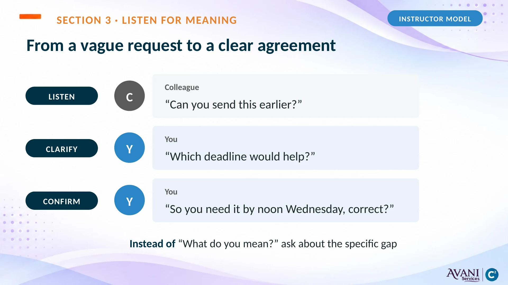
2 minutes
PowerPoint in presentation mode.
Model the three steps in a short, realistic exchange.
SAY“My colleague says, ‘Can you send this earlier?’ Listen: earlier than what? I notice it’s about timing, not content. Clarify: ‘Which deadline would help?’ They tell me noon Wednesday. Confirm: ‘So you need it by noon Wednesday, correct?’ Now we both know exactly what success looks like.” Voice both sides, using a slightly different tone for the colleague so audio-only participants can follow.
DOPoint to the contrast line at the bottom.
SAY“Compare that with ‘What do you mean?’ It’s a question, but without context it can sound annoyed or defensive. A good clarifying question points to the specific gap.”
“Now try it with a harder message.”
Section 3 · Listen for meaning · eWorkbook, Part 3
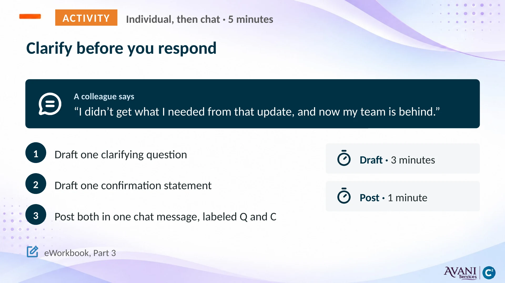
5 minutes: 1 minute for directions, 3 minutes to write, and 1 minute to post
eWorkbook, Part 3 (Clarify and confirm). Visible 3-minute timer. Chat.
Participants write a clarifying question and a confirmation statement for a realistic, uncomfortable message (Outcome 4).
One neutral clarifying question and one specific confirmation statement, posted together in one chat message.
WHY IT MATTERS (SAY)“Here’s a message that may invite a defensive reply. Practicing a neutral question and a specific confirmation here makes it easier to do in the moment.”
SAY“Right after an update, a colleague, mentee, or mentor says: I didn’t get what I needed from that update, and now my team is behind. Before you respond, you need to understand the gap.”
SAY“You’ll write two things. First, a clarifying question: one neutral question that asks about the gap. Second, a confirmation statement: imagine they’ve answered your question, then state back what you now understand and check it. For example, ‘So you needed the decision date by Monday. Is that right?’”
DOAsk participants to open Part 3 of the eWorkbook.
PASTE IN CHATPaste the instructions.
DOStart the 3-minute timer. With 1 minute left, say: “One minute. Make sure your confirmation includes something specific, like a date, an owner, or a format.”
SAY“Time. Post your question and confirmation now, in one message, labeled Q and C.”
Clarify: “Which information was missing?” / “What did your team need to move forward, and by when?” / “Which part of the update caused the delay?”
Confirm: “So the update didn’t say who owns the next step or the decision date. Is that right?” / “I’m hearing you needed the decision date by Monday. Is that the gap?”
Defensive explanations: “I sent it on time.”
Vague questions without context: “What do you mean?”
Confirmations that assume agreement: “So we’re good now, right?”
Apologies that skip understanding: “Sorry, I’ll do better.”
Participants can read their Q and C aloud during the debrief, or send them to you by private chat.
“Let’s see which questions moved the conversation forward.”
Section 3 · Listen for meaning · 1 click reveal: Sample response and “Strong responses” note
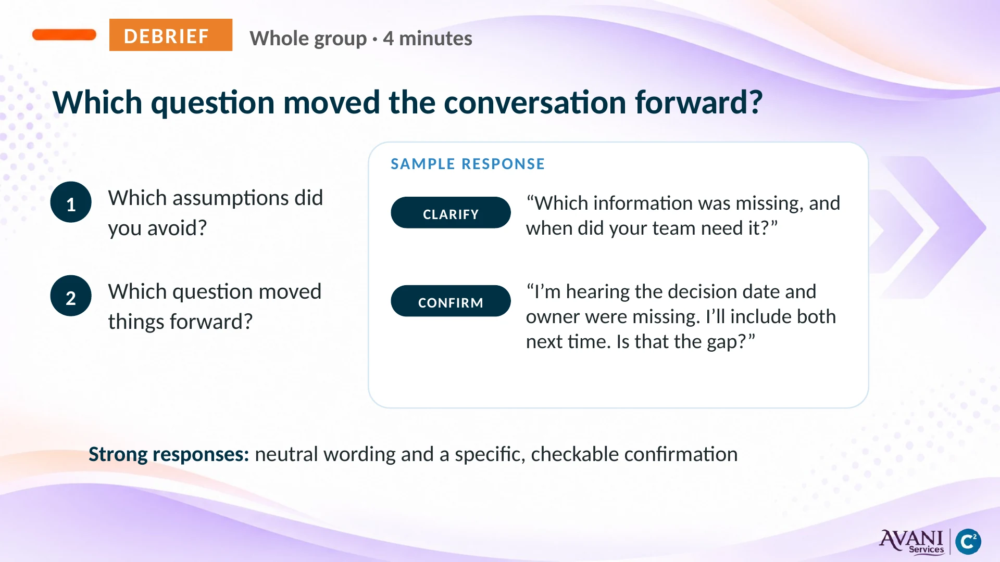
4 minutes
Chat posts from the activity. This slide has one click build: the sample response.
Debrief the clarifying questions and confirmations, then show a model response.
DORead three clarifying questions from chat that take different approaches, or invite the authors to read them.
ASK“Which assumptions did these questions avoid?”
ASK“Which question moved things forward, and why?”
DORead two confirmation statements from the same posts.
ASK“Could the other person answer yes or no to this? What makes it specific?”
DOClick to reveal the sample response. Walk through it: the question names the missing information and the timing; the confirmation names exactly what was missing, the decision date and owner, commits to including both, and checks.
DEBRIEF“Strong responses have two things: neutral wording, and a confirmation that’s specific enough to check.”
Assumptions avoided: that the update was late (it may have been incomplete), that the colleague was blaming me, or that they needed more detail (they may have needed less)
Questions that move things forward name the gap and the timing: which information, by when, and for whom
Specific confirmations include something checkable: a date, an owner, or a format
Participants who say clarifying questions slow things down. Point out that one question takes seconds; acting on the wrong assumption can cost days.
“Understanding the message matters most when the message is uncomfortable. Let’s apply that to feedback.”
Section 4 · Respond to feedback
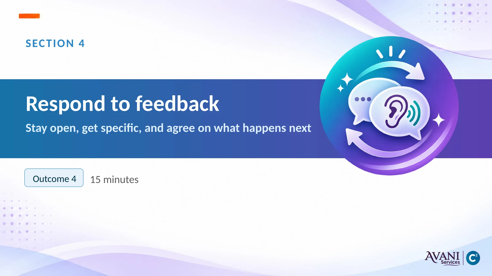
1 minute
PowerPoint in presentation mode.
Open Section 4 and connect it to Outcome 4.
SAY“Section 4 is about the moment someone tells you something you didn’t want to hear. The goal is to stay open, get specific, and leave with an agreed next step.”
“Here are four moves to do that.”
Section 4 · Respond to feedback
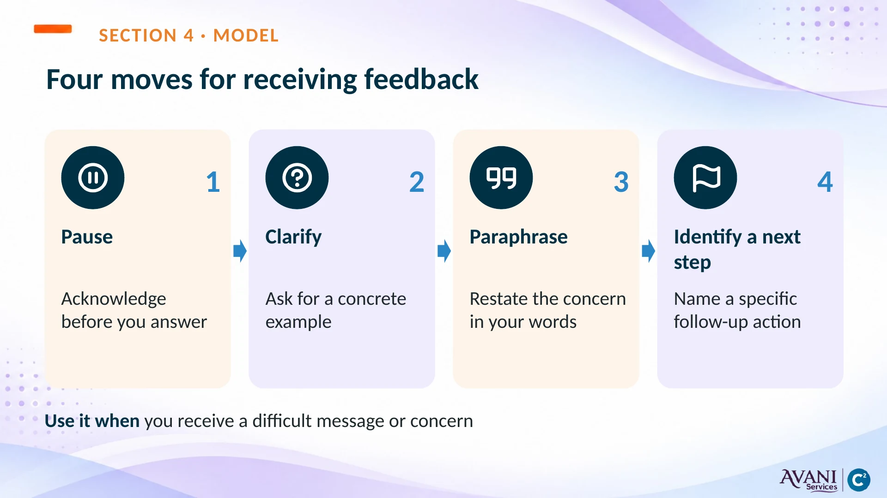
2 minutes
PowerPoint in presentation mode.
Teach Pause → Clarify → Paraphrase → Identify a Next Step for receiving feedback.
WHY IT MATTERS (SAY)“When someone tells you something you didn’t want to hear, it can trigger a fast, defensive reflex. Here’s a simple sequence that can keep you from reacting defensively, so the conversation ends with action instead of tension.”
DOPoint to each card as you describe it.
SAY“First, pause. Take a breath and acknowledge you heard it: ‘Thanks for telling me.’ That isn’t agreement. It shows you’re listening. Second, clarify by asking for a concrete example: ‘Can you show me where that happened?’ Third, paraphrase the concern in your own words: ‘So the main request got buried.’ Fourth, identify a next step, one specific follow-up: ‘I’ll put the decision at the top, starting with Friday’s update.’”
SAY“You’ll notice Clarify appears in both of today’s models. In Listen, Clarify, Confirm, you’re checking an unclear request. Here, you’re receiving a difficult message, so you pause first and finish with a next step. This is a response structure, not a second listening model.”
Participants may think “pause” means silence, which can feel awkward on a video call. A pause can be one breath plus “Thanks for flagging that.”
“The first sentence matters most.”
Section 4 · Respond to feedback · 1 click reveal: Effect line under both openings
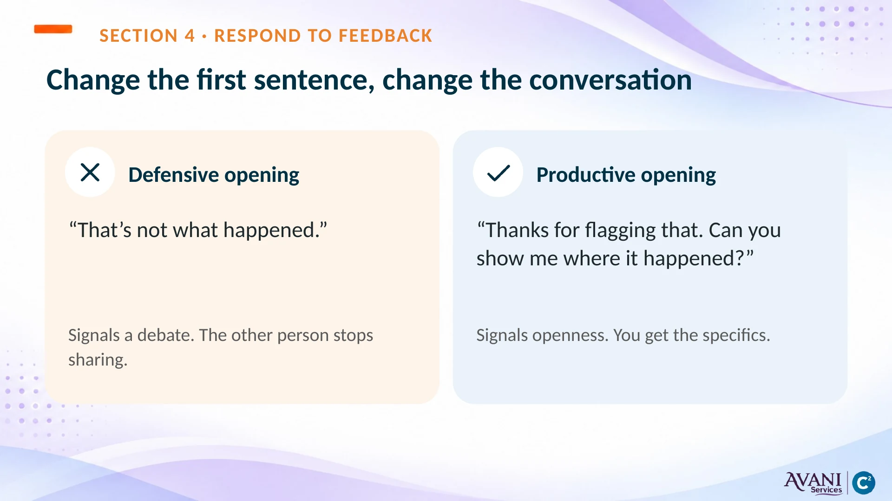
2 minutes
Chat. This slide has one click build: the effect line under each opening.
Contrast a defensive opening with a productive one, using participants’ own reactions.
WHY IT MATTERS (SAY)“The first sentence of your response sets the direction of the whole conversation. Let’s see what makes the difference.”
DORead the defensive opening aloud in a natural, slightly clipped tone.
ASK“If someone said this to you, how would you feel? Type one word in chat.”
DORead the productive opening aloud in a calm tone.
ASK“And this one? One word in chat.”
DORead a few words from each set of reactions aloud. Then click to reveal the effect line under both openings.
SAY“Notice the productive opening doesn’t agree that something went wrong. It just asks to see it. You can stay open and still keep your own view.”
Defensive opening: shut down, dismissed, annoyed, defensive
Productive opening: heard, respected, willing to explain
“Now rewrite a defensive response yourself.”
Section 4 · Respond to feedback · eWorkbook, Part 4
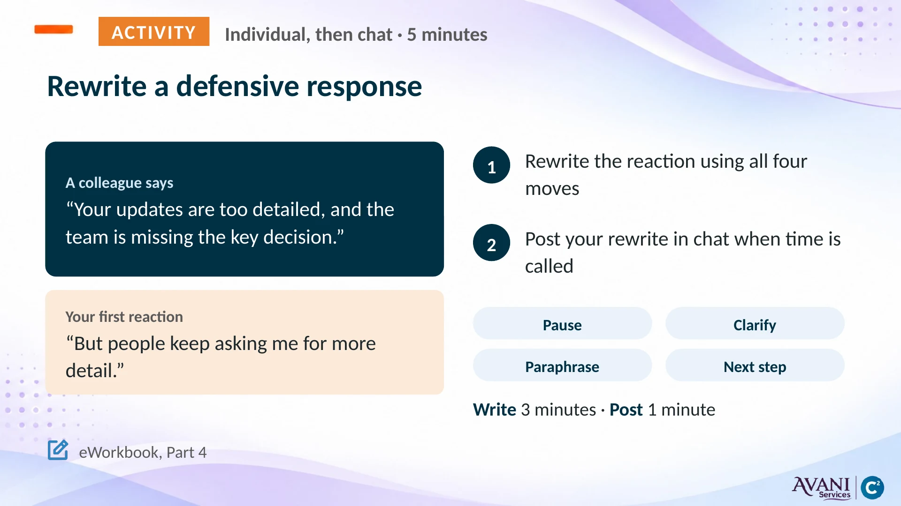
5 minutes: 1 minute for directions, 3 minutes to write, and 1 minute to post
eWorkbook, Part 4 (Feedback rewrite). Visible 3-minute timer. Chat.
Participants rewrite a defensive reaction into a four-part response (Outcome 4).
A short spoken response with an acknowledgment, a concrete clarifying question, an accurate paraphrase, and a specific next step.
WHY IT MATTERS (SAY)“Most people know they shouldn’t get defensive, but turning a defensive response into a productive one can be tough. Rewriting an actual defensive line gives you replacement words you can reach for under pressure.”
SAY“Here’s feedback a lot of people get about status updates: Your updates are too detailed, and the team is missing the key decision. And here’s a very human first reaction: But people keep asking me for more detail. It’s understandable, and it closes the conversation. Your job is to rewrite it using all four moves: pause, clarify, paraphrase, and a next step.”
DOAsk participants to open Part 4 of the eWorkbook.
PASTE IN CHATPaste the instructions.
DOStart the 3-minute timer. With 1 minute left, say: “One minute. Check that you have all four moves, and that your next step says what will change and when.”
SAY“Time. Post your rewrite in chat now.”
“Thanks for flagging that. Which part made the decision hard to find? I hear that the main request was buried. I’ll put the decision and deadline at the top and move supporting details below.”
“I appreciate you telling me. Can you point me to last week’s update so I can see where it got lost? So the decision is there, but it’s hard to find. Starting Friday, I’ll lead with a two-line summary.”
Skipping Clarify and jumping to a fix
A paraphrase that argues: “I hear you think it’s too long, but...”
A vague next step: “I’ll do better.” Ask: “What would someone see you do differently, and when?”
Participants can read their rewrite aloud during the debrief, or send it to you by private chat to read anonymously.
“Let’s hear a few and make them stronger.”
Section 4 · Respond to feedback · 1 click reveal: Sample response
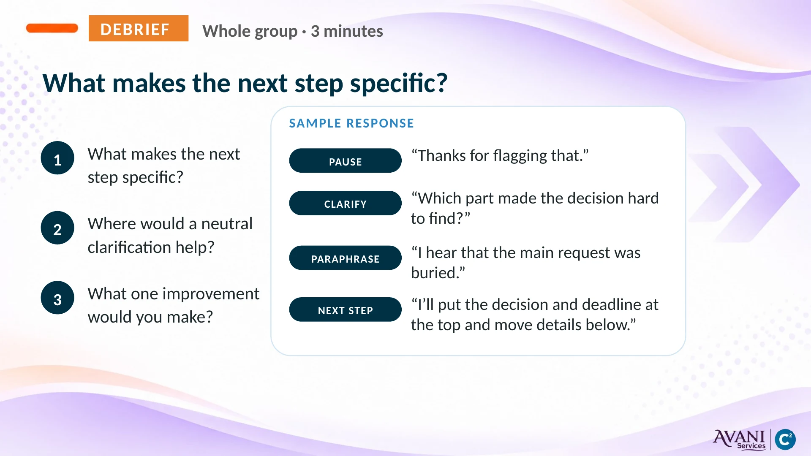
3 minutes
Chat posts from the activity. This slide has one click build: the sample response.
Debrief and strengthen the rewrites against the four moves, then show a model response.
DORead two rewrites from chat, or invite two volunteers to read theirs. For each, check aloud for the four parts: acknowledgment, concrete clarification, accurate paraphrase, and a specific next step.
ASK“What makes the next step specific?” and “Where would a neutral clarification help?”
ASK“What one improvement would you make to one of these?” Take one suggestion.
DOClick to reveal the sample response. Read it and compare it with the drafts you discussed.
DEBRIEF“A specific next step says what will change, when, and how the other person will see it.”
A specific next step names what will change, when, and how the other person will see it, such as “decision and deadline at the top, starting with Friday’s update.”
A neutral clarification asks for an example rather than defending: “Which part made the decision hard to find?”
Typical improvement: replacing “I’ll make it shorter” with exactly what moves to the top and what moves below.
“One important boundary before we put it all together.”
Section 4 · Respond to feedback
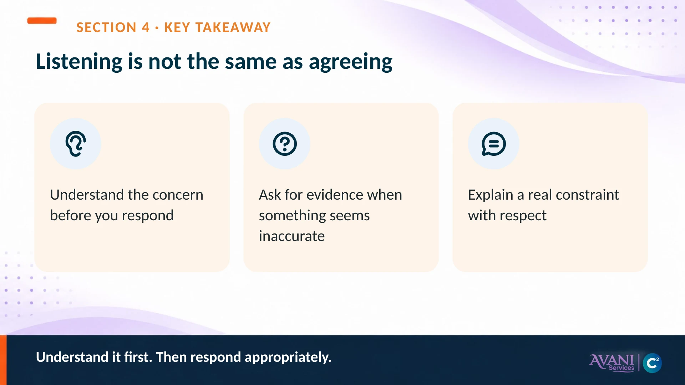
2 minutes
PowerPoint in presentation mode.
Clarify that receiving feedback constructively doesn’t mean accepting every claim.
DOPoint to the three cards as you speak.
SAY“Listening to feedback isn’t the same as agreeing with it. You do need to understand it. Then you can respond appropriately. If something seems inaccurate, ask for evidence: ‘Can you show me an example?’ If there’s a real constraint, explain it with respect. For example: ‘I hear the updates are too long. Part of the length is the compliance section I’m required to include. Could we move it to an attachment?’ You stayed open, you were honest about the constraint, and you proposed a next step.”
Participants may hear “explain a constraint” as permission to defend. The difference is timing and intent: you explain after you’ve understood the concern, and you pair it with a proposal.
“Now let’s put adapting, listening, and feedback into one conversation.”
Section 5 · Integrate the skills
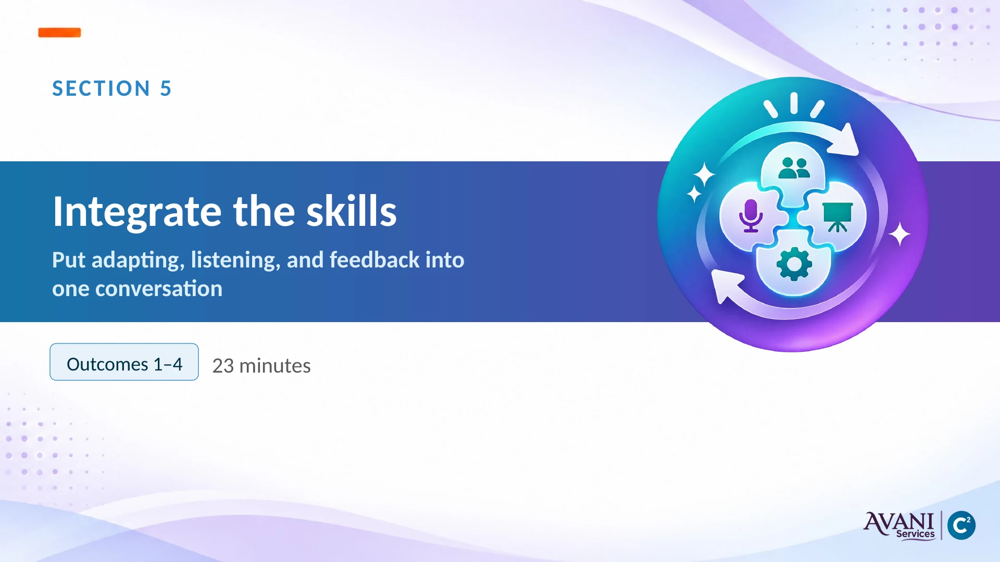
1 minute
PowerPoint in presentation mode. Breakout rooms ready (see Slide 31), or the main-room alternative on Slide 32.
Open the integrated practice, which covers all four outcomes.
SAY“This is the part of the session where it all comes together. You’ll use your preferences, the dials, Listen, Clarify, Confirm, and the four feedback moves in one realistic conversation. You’ll write a response on your own first. Then you’ll try it out loud in a small group and make it stronger.”
“Here’s the situation.”
Section 5 · Integrate the skills · eWorkbook, Part 5
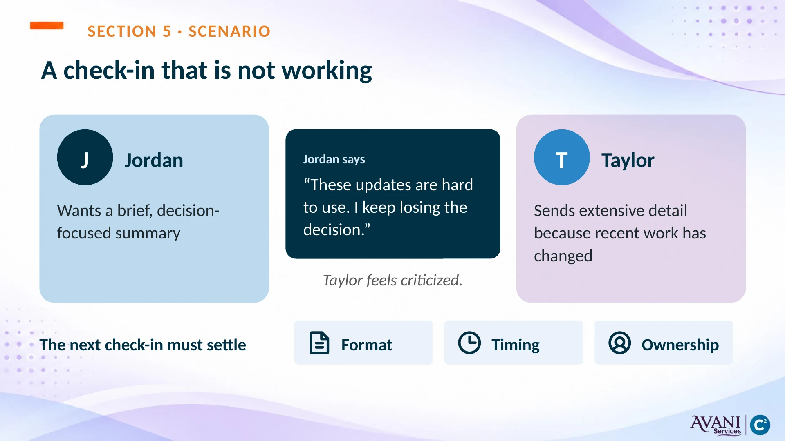
2 minutes
eWorkbook, Part 5 (Check-in practice). Chat.
Set a realistic scenario that requires adapting, listening, and responding to feedback, and identify what each person needs.
WHY IT MATTERS (SAY)“Here’s a situation that shows up in mentoring relationships and on any team that shares recurring updates. It needs every skill from today, so it’s a good one to practice your adaptive communication skills on.”
SAY“Two colleagues coordinate a recurring project update. Jordan wants a brief, decision-focused summary. Taylor sends extensive detail because recent work has changed a lot. Jordan says, ‘These updates are hard to use. I keep losing the decision.’ Taylor feels criticized. Their next check-in has to settle three things: the format of the update, the timing, and who owns what.”
PASTE IN CHATPaste the scenario so everyone has it in writing.
ASK“Based only on what they’ve said and done, what does each person seem to need? Type it in chat: Jordan needs... Taylor needs...”
DORead two or three responses aloud and confirm the key needs.
Jordan: the decision and deadline quickly, in a format that’s easy to find
Taylor: acknowledgment that the changes are real, and a way to share the detail that still matters
Participants may label Jordan or Taylor, for example, “Jordan is obviously a bottom-line type.” Redirect to what was said: “What did Jordan actually say they need?”
“You’ll all practice as Taylor. Here’s Round 1.”
Section 5 · Integrate the skills · eWorkbook, Part 5
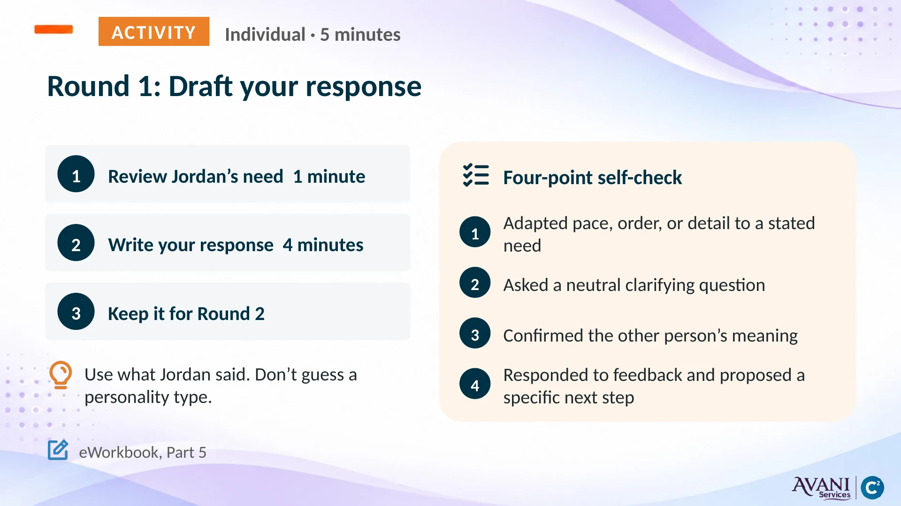
5 minutes: 1 minute for directions and 4 minutes to write
eWorkbook, Part 5, Round 1. Visible 4-minute timer. Chat, for the instructions below.
Each participant writes a complete initial response as Taylor, using all four checklist behaviors.
A complete Taylor response in Part 5, Round 1, with all four moves in complete sentences, not only labels.
SAY“In Round 1, everyone writes as Taylor. Write what you’d actually say to Jordan at the start of the check-in, in complete sentences. Your job isn’t to diagnose Jordan’s personality. Ask what Jordan needs, show that you heard it, adjust the message, and agree on what happens next. Include four moves: acknowledge Jordan’s concern, ask one neutral clarifying question, confirm what Jordan needs, and propose a specific next step with a format, a deadline, and an owner. The four-point checklist is on the screen. This is a first draft. You’ll test it and improve it in Round 2.”
DOAsk participants to open Part 5, Round 1.
PASTE IN CHATPaste the instructions.
DOStart the 4-minute timer. With 1 minute left, say: “One minute. Check your draft against the four-point checklist.”
SAY“Time. Keep that draft handy. In Round 2, you’ll say it out loud to someone playing Jordan.”
Participants name an acknowledgment, a neutral clarifying question, a confirmation of the need, and a measurable next action.
Acknowledge: “Thanks for flagging that. I understand the update wasn’t easy to use.”
Clarify: “Which information do you need at the top to make a decision?”
Confirm: “So you need the decision and deadline first, with supporting details available afterward. Is that right?”
Next step: “I’ll send a three-line summary by Wednesday at 2 p.m., with changes and risks attached. You can tell me Thursday if anything is missing.”
Defensive openings, such as “I send detail because things keep changing”
Invented facts that aren’t in the scenario
Style labels for Jordan instead of what Jordan said
Next steps that promise an improvement but leave out a time or owner
Participants trying to write a perfect script. Tell them Round 1 is a first attempt, not a final answer.
“Here’s how Round 2 works.”
Section 5 · Integrate the skills · eWorkbook, Part 5
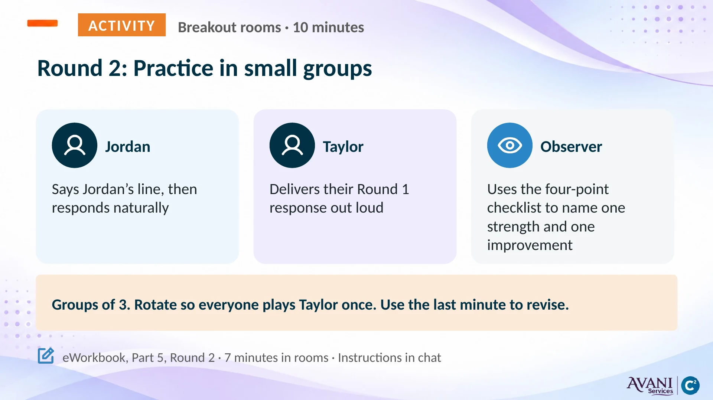
10 minutes: 2 minutes for directions and opening rooms, 7 minutes in breakout rooms, and 1 minute to return
Breakout rooms (groups of three). eWorkbook, Part 5, Round 2. Chat, for the instructions below. A producer, if available.
Each participant says their response out loud, hears how it lands, gets checklist-based feedback, and improves it. Small groups give quieter participants more room to speak.
Learning purpose: practice the integrated skills out loud with a real listener, then revise using peer feedback.
Group size: three. With an uneven number, use a group of two (skip the observer; Jordan gives the feedback) or a group of four (two observers).
Roles: Taylor delivers their Round 1 response. Jordan opens with Jordan’s line and responds naturally. The observer uses the four-point checklist and names one strength and one improvement. Rotate so everyone plays Taylor once.
Time in rooms: 7 minutes: about 2 minutes per Taylor, then 1 minute for everyone to revise their own response.
Expected output: a revised Taylor response in Part 5, Round 2, and one change each person can name.
Producer: before class, confirm breakout rooms are enabled. During this slide, paste the chat instructions, create random rooms of three, open them, send the broadcast messages, and close the rooms at 7 minutes. Without a producer, the instructor does these steps.
Instructor: visit one or two rooms if your platform allows. Listen more than you talk, and redirect groups that discuss instead of practicing out loud.
If breakout rooms aren’t available or practical: skip this slide and use the main-room alternative on Slide 32.
SAY“In Round 2, you’ll practice in groups of three. Each of you takes a turn as Taylor, so everyone gets to say their response out loud and hear how it lands.”
DOPoint to each role card as you describe it.
SAY“Taylor reads their Round 1 response. Jordan opens by saying Jordan’s line, ‘These updates are hard to use. I keep losing the decision,’ and then responds the way Jordan naturally might. The observer uses the four-point checklist and names one strength and one thing to improve. Then rotate. Plan on about two minutes per turn. After all three turns, take a minute on your own to revise your response in Part 5, Round 2. When you come back, I’ll ask you to post one change you made.”
PASTE IN CHATPaste the instructions before you open the rooms. Participants won’t see the slide once they’re in their rooms.
SAY“The instructions are in chat, so keep chat or your eWorkbook open. The person whose first name comes first alphabetically plays Taylor first. Any questions before I open the rooms?”
DOOpen the breakout rooms (random groups of three).
DOBroadcast to all rooms with about 5 minutes left: “Switch roles. Next Taylor, please.” With about 3 minutes left: “Switch roles. Last Taylor.” With 1 minute left: “Revise your own response in Part 5, Round 2.”
DOClose the rooms at 7 minutes. As participants return, welcome them back.
Taylors who add a clarifying question before proposing a fix
Observers who point to a specific checklist item, such as “I didn’t hear you confirm what Jordan needs”
Next steps that become specific: a format, a day and time, and an owner
Groups that discuss the scenario instead of practicing out loud. Prompt them: “Try it out loud first, then talk about it.”
Observers who critique personality or style instead of using the checklist
Participants who joined late and have no Round 1 draft. They can play Jordan or observer, then draft as Taylor last.
Participants who’d rather not speak can type their Taylor response in the room’s chat and have Jordan respond in chat. Camera remains optional in rooms.
“Welcome back. Let’s see what changed between your first draft and your revision.”
Section 5 · Integrate the skills · Hidden in PowerPoint (main-room alternative) · eWorkbook, Part 5
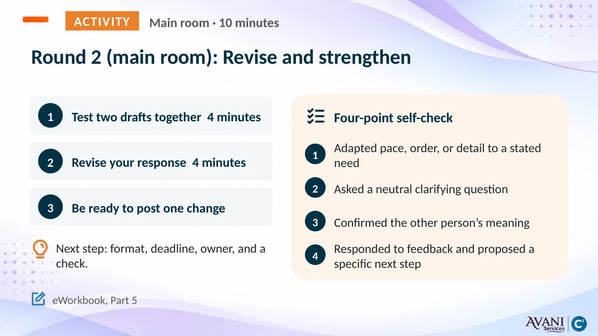
10 minutes, used instead of Slide 31: 1 minute for directions, 4 minutes to test two drafts together, 4 minutes to revise, and 1 minute of buffer
eWorkbook, Part 5, Round 2. Visible 4-minute timer. Chat. This slide is hidden. To use it, unhide it and hide Slide 31 before class, or jump to it during the session from presenter view.
Provide the same Round 2 practice in the main room when breakout rooms are unavailable, impractical, or unsuitable, such as a very small group or a large group without a producer.
SAY“In Round 2, we’ll test a couple of drafts together, and then you’ll strengthen your own.”
ASK“Would two volunteers post their Round 1 response in chat, or read it aloud?” If no one volunteers, use the practice draft in the notes below.
DOFor each draft, read it aloud as Taylor, then reply with one natural line as Jordan.
ASK“Which checklist items did you hear? What’s one thing that would make it stronger?” Take answers in chat or aloud.
PASTE IN CHATPaste the revision instructions.
DOStart the 4-minute timer. With 1 minute left, say: “One minute. Check that your next step names a format, a deadline, and an owner, and asks whether Jordan agrees.”
Practice draft (use if no one volunteers): “Thanks. I send detail because things keep changing. What do you want instead? I’ll make it shorter from now on.” Participants should notice the defensive explanation, a clarifying question that sounds impatient, no confirmation, and a next step with no format or time.
Volunteers may feel exposed when their draft is critiqued. Thank them first, and ask the group for one strength before one improvement.
“Let’s see what changed between your first draft and your revision.”
Section 5 · Integrate the skills
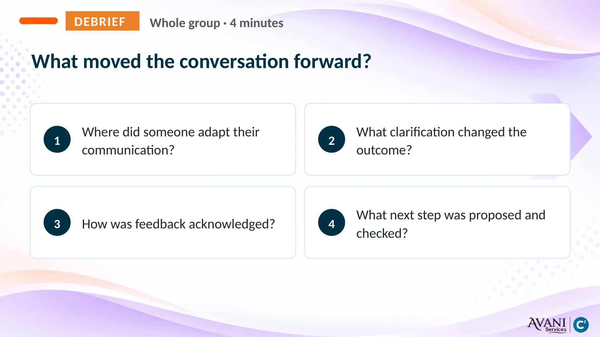
4 minutes
Chat.
Compare initial and improved responses and identify how each of the four skills was applied.
PASTE IN CHATPaste the prompt.
SAY“Post one line from your improved response, and tell us what you changed from your first draft.”
DORead three or four posts aloud. Highlight the before-and-after in each.
ASKThe four questions on screen, in order. They match the four checklist items. Take one or two answers each: “Where did someone adapt their communication? What clarification changed the outcome? How was feedback acknowledged? What next step was proposed, and how did Taylor check it?”
DEBRIEF“Notice that nobody needed to decide what kind of person Jordan is. Asking about the level of detail and agreeing on a format settled it.” Reinforce that a respectful response doesn’t require agreeing with every criticism, and that a next step is a proposal until Jordan confirms it. If time allows, ask: “What would you do differently in a real check-in?”
Typical changes from Round 1: added a clarifying question before proposing a fix; replaced “I’ll make it shorter” with a specific format and deadline; added a check for agreement; dropped a defensive explanation
Adapt: Taylor led with the decision and deadline, and offered details on request.
Clarify: “Which supporting details do you still need?” or “Which part is hardest to use?”
Acknowledge: “Thanks for being direct,” before explaining anything
Next step: a proposed format, time, and owner, plus a question to check whether Jordan agrees
“I’ll send you a three-line decision summary with a supporting appendix by 2 p.m. Wednesday. Would that format give you what you need for Thursday’s review?”
“Taylor sends a brief decisions-first update on Wednesday. Jordan confirms by Thursday whether any supporting details are still missing.”
Participants who describe a proposed next step as already agreed. An agreement is confirmed by the other person, so the response needs a check, such as “Would that work for you?”
A deadline without an owner, a change to the facts, or lengthy wording that buries the decision
“Here’s one way the check-in could end.”
Section 5 · Integrate the skills
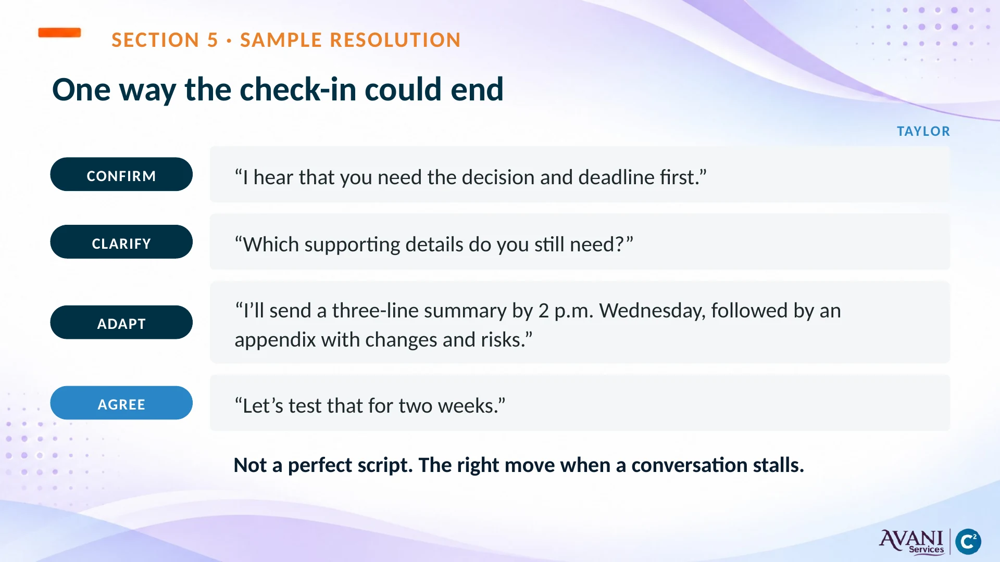
1 minute
PowerPoint in presentation mode.
Show a sample resolution after participants have completed their own responses.
SAY“Here’s one way Taylor might close the check-in. ‘I hear that you need the decision and deadline first.’ That’s confirming. ‘Which supporting details do you still need?’ That’s clarifying. ‘I’ll send a three-line summary by 2 p.m. Wednesday, followed by an appendix with changes and risks.’ That’s adapting the format and naming a next step. ‘Let’s test that for two weeks.’ That’s agreeing on how you’ll know it worked.”
SAY“It settles format, timing, and ownership. The goal isn’t a perfect script. It’s choosing the right move when a conversation starts to stall.”
“Let’s make that personal.”
Commit and close · eWorkbook, Part 6
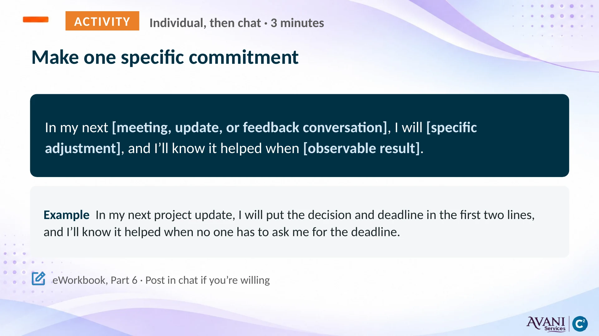
3 minutes: 2 minutes to write and 1 minute to share
eWorkbook, Part 6 (My commitment). Visible 2-minute timer. Chat.
Each participant commits to one specific, observable workplace application.
One real setting, one behavior, and a way to tell whether it helped.
WHY IT MATTERS (SAY)“That concludes the learning portion of this course. Now it’s time to think about how you’ll apply what you learned in your work. After all, learning doesn’t become capability until it’s applied.”
DOAsk participants to open Part 6 of the eWorkbook.
PASTE IN CHATPaste the sentence frame.
SAY“Choose a real conversation in the next week or two, and use the sentence frame on the screen. Your commitment stays private unless you choose to share it.”
DOStart the 2-minute timer.
SAY“Time. If you’re willing, post your commitment in chat.”
DORead two or three commitments aloud, or invite two volunteers to share theirs. Respond briefly to each, naming the setting, the behavior, and the observable result.
“In my next mentoring check-in, I will ask what level of detail helps before I share my update, and I’ll know it helped when we finish on time with a clear next step.”
“In my next feedback conversation, I will pause and ask for one example before responding, and I’ll know it helped when I can paraphrase the concern accurately.”
Vague commitments, such as “communicate better.” Coach briefly: “What would someone see you do differently, and when?”
Commitments stay private in the eWorkbook unless a participant chooses to share.
“Let’s close with three moves to take with you.”
Commit and close
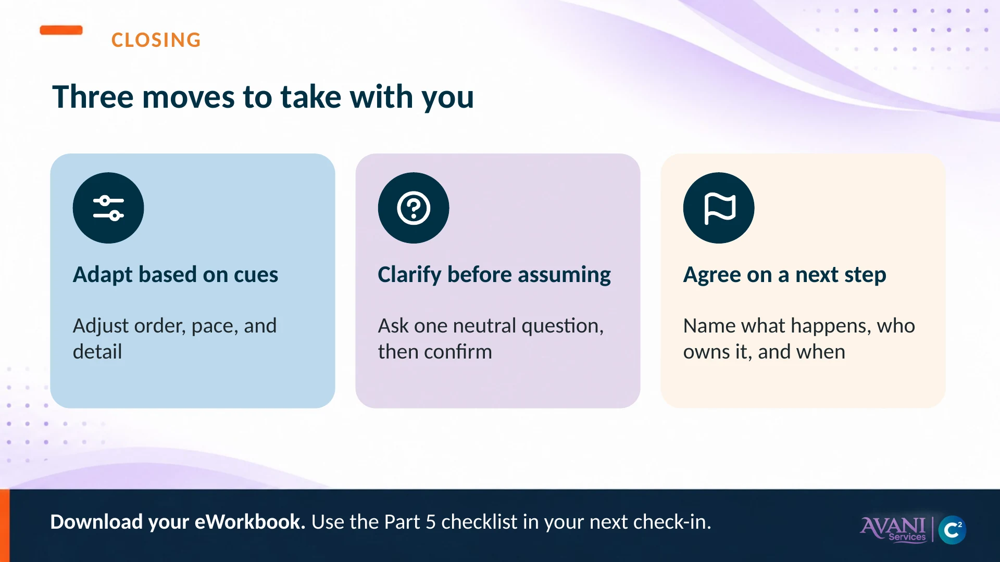
1 minute
PowerPoint in presentation mode. Your program’s evaluation link, if it uses one.
Reinforce the three core skills and support transfer to the job.
SAY“Here are the three things to take with you: adapt based on cues, clarify before assuming, and agree on a next step. Keep your eWorkbook, and use the Part 5 checklist before your next check-in. If you’re in a mentoring relationship, share your commitment with your mentor or mentee. It’s an easy way to find out whether it’s working.”
PASTE IN CHATPaste the closing reminder. Add any follow-up resources your program uses.
“Thank you for your time and your examples today.”
Commit and close
1 minute
PowerPoint in presentation mode.
Close the session on time.
SAY“Thank you for your time, your honesty, and your examples. Take the tools with you, and try your commitment this week.”
DORemind participants to save their eWorkbook.
DOEnd the session at the 90-minute mark. If your schedule allows, stay on for 2 to 3 minutes for individual questions.
End of session.